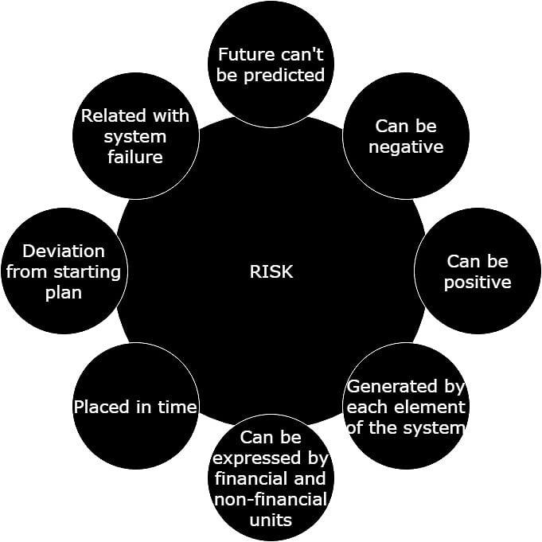
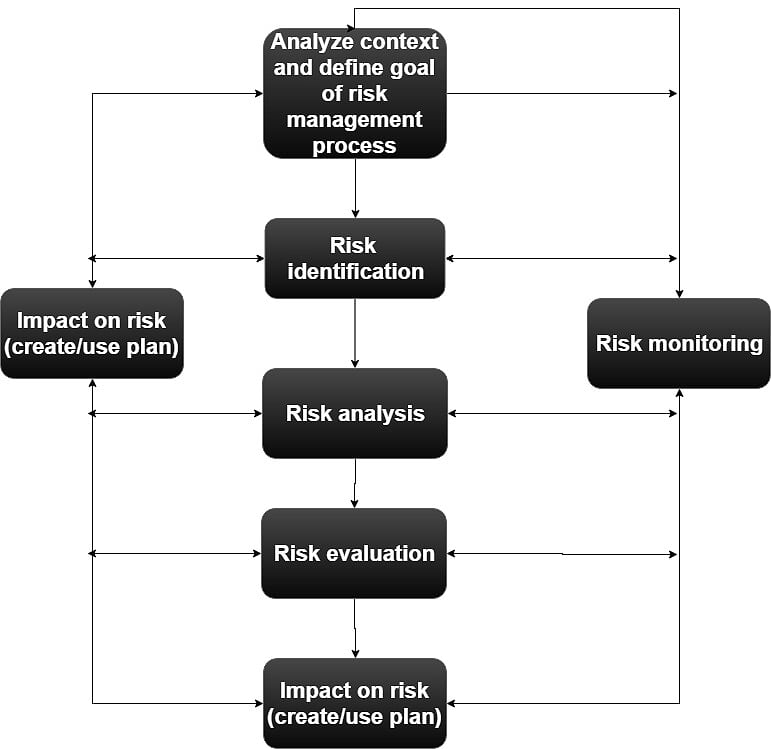
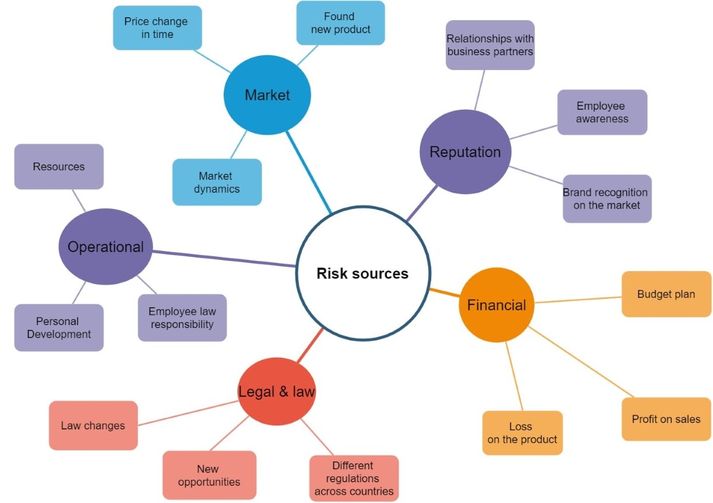
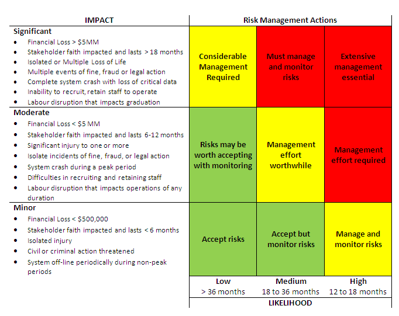
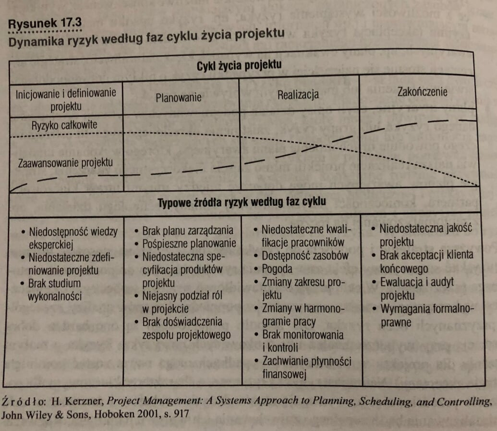
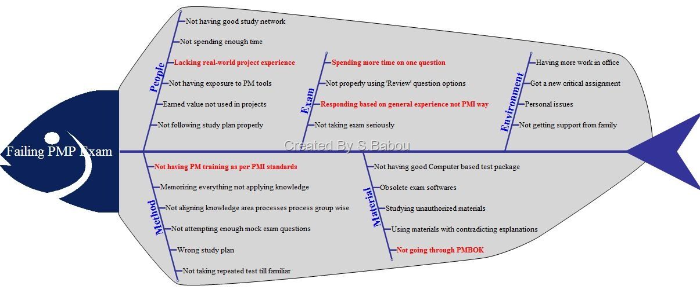

Risk management makes life easier
by Grzegorz Pierzchala
g_pierzchala@outlook.com
+48 694 363 612
## Agenda <p class="fragment" data-fragment-index="1">1. What risk is all about?</p> <p class="fragment" data-fragment-index="2">2. Risk management cycle & methods</p> <p class="fragment" data-fragment-index="3">3. Risk dynamics in time</p> <p class="fragment" data-fragment-index="4">4. Extras</p>
What risk is all about?
## Definition <p class="fragment" data-fragment-index="1">Risk is something unpredictable and has impact for project</p>
## But we can something more <p class="fragment" data-fragment-index="1">  </p>
## So, what is risk management? <p class="fragment" data-fragment-index="1"> Risk management is a area of project management which deal with identification, analysis and evaluation of project risk in order to build risk handling strategy plan, risk control to reduce impact on the organization </p>
Risk management process

Risk strategies
## Most common risk strategies <p class="fragment" data-fragment-index="1"> 1. Avoidance -> avoid situations that involve risk; </p> <p class="fragment" data-fragment-index="2"> 2. Reduction -> take measures to reduce severity of potential loss; </p> <p class="fragment" data-fragment-index="3"> 3. Transfer -> move whole or part of risk loss across team, 3rd parties, etc. </p> <p class="fragment" data-fragment-index="4"> 4. Acceptance -> Risk acceptance is when no change in the project is made to accommodate the risk. <br/> Passive acceptance requires no action beyond documenting the decision. <br/> Active acceptance includes further action eg. setting aside contingency to offset the effect of the risk. </p>
Risk sources

Extras
## Risk matrix 
## Risk dynamic per phase 
## Ishikawa always helps 
## Risk storming <p> You will see on the next meeting :) </p>
Thank you!
Questions?